about me
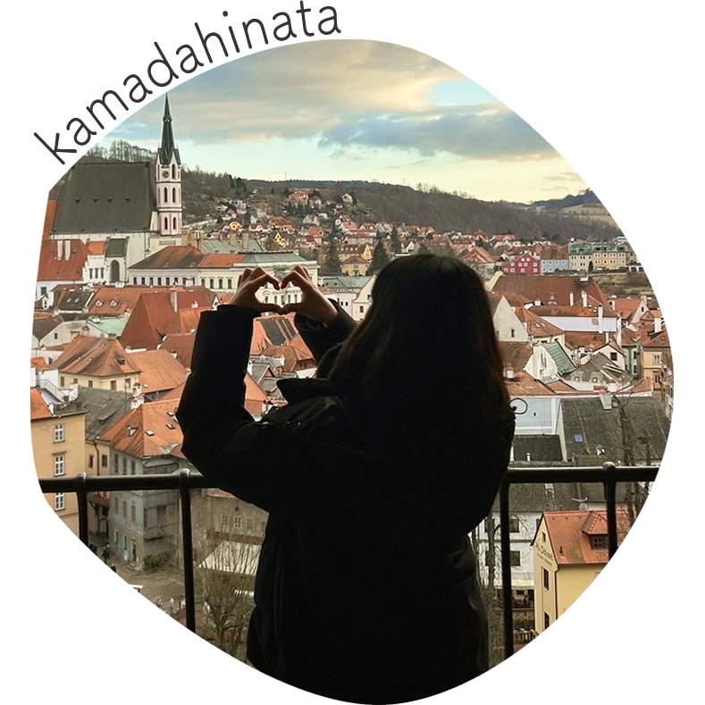
魅力を引き出す
強みであるリフレーミングを活かし、
webを通してたくさんの魅力を伝えられるデザイナーを目指しています。


魅力を引き出す
強みであるリフレーミングを活かし、
webを通してたくさんの魅力を伝えられるデザイナーを目指しています。
北海道札幌市で生まれる
2000.10.7
北海道札幌市で生まれる
2000.10.7
2005
幼稚園で書いた
将来の夢は「絵かきさん」
2005
幼稚園で書いた
将来の夢は「絵かきさん」
父に勧められ
バスケットボールを始める
2008
父に勧められ
バスケットボールを始める
2008
2013
千代田区立九段中等教育学校に入学
バスケットボール部に入部し、
怪我をたくさん経験する
2013
千代田区立九段中等教育学校に入学
バスケットボール部に入部し、
怪我をたくさん経験する
スポーツトレーナーに興味をもち、
日本体育大学に進学
2019
スポーツトレーナーに興味をもち、
日本体育大学に進学
2019
2020.3
株式会社ジーユーにアルバイトとして入社し、販売員として働く
（現在も引き続き働いています）
2020.3
株式会社ジーユーにアルバイトとして入社し、販売員として働く
（現在も引き続き働いています）
スポーツを広めることに関わりたいと考え始める
webデザイナーという職業を知る
2022
スポーツを広めることに関わりたいと考え始める
webデザイナーという職業を知る
2022
2023
大学卒業後
デジタルハリウッドスクール
webデザイナー専攻に進学
2023
大学卒業後
デジタルハリウッドスクール
webデザイナー専攻に進学
デジタルハリウッドスクール
webデザイナー専攻を卒業
2023.9
デジタルハリウッドスクール
webデザイナー専攻を卒業
2023.9
理解力
情報処理能力
リフレーミング
販売員としてお客様と日々接し、お客様のニーズに素早く答えようと努力し、身につきました。
クライアント様の情報を正しく理解し、課題解決につなげることができます。
販売員としてお客様に素早く的確に情報を伝えようと努力し、身につきました。
情報が整理されており、わかりやすいサイトを制作することができます。
ネガティブなことをポジティブに変換することが得意です。
自分自身を律し、前向きに制作に取り組むことができます。

2022.8~

2022.8~

2023.7~
2023.12~

2023.7~
2022.10~
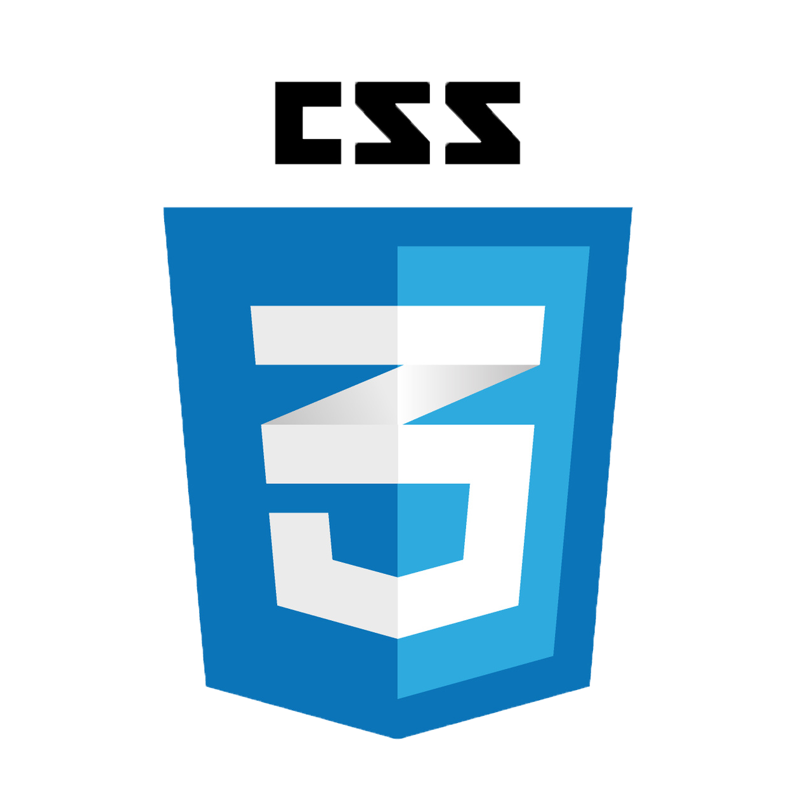
2022.10~
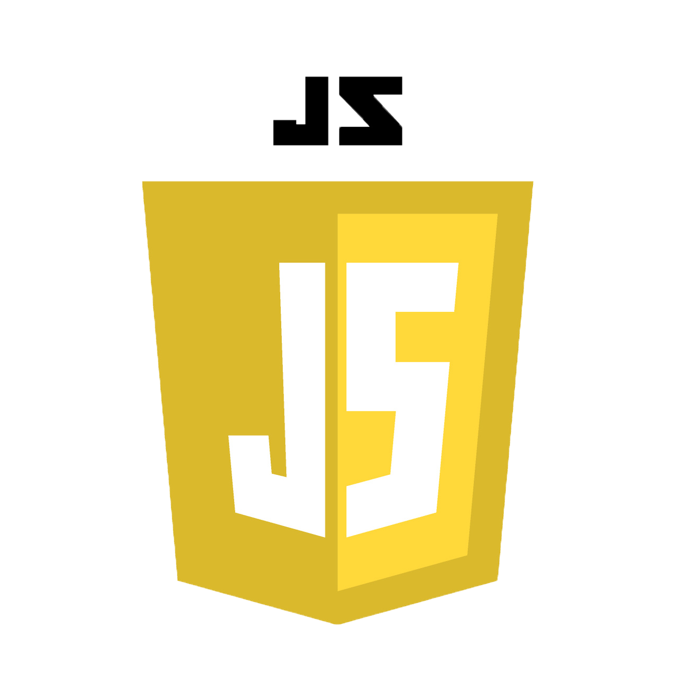
2023.7~
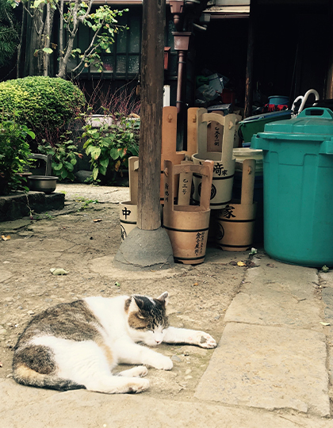
猫が大好きです。
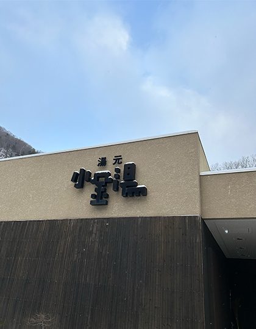
温泉・銭湯が大好きです。
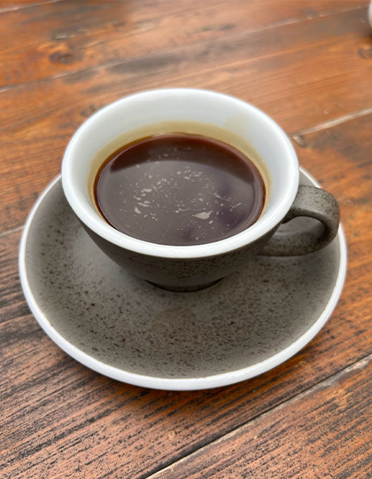
コーヒーが大好きです。ブラック派です。
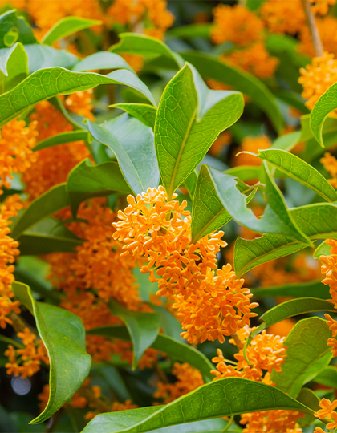
誕生花は金木犀です。
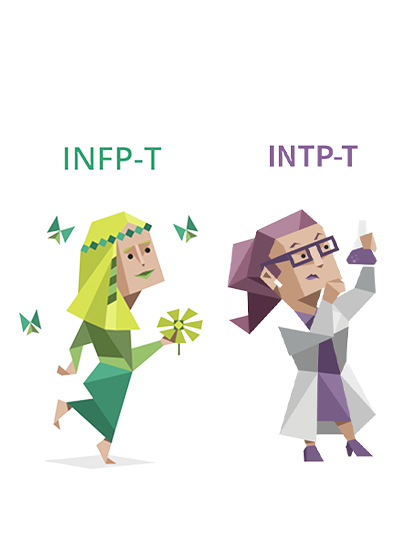
mbtiはINFP-tの時もあればINTP-tの時もあります。
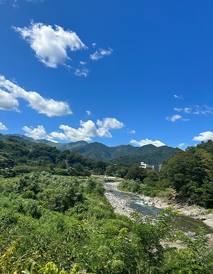
自然を感じるのが好きです。
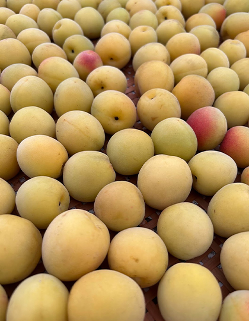
食べ物では梅が結構好きです。
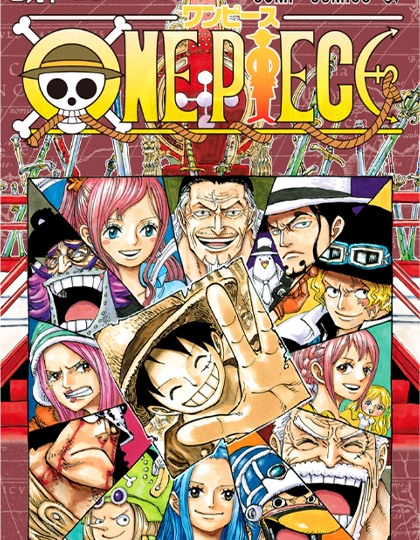
漫画が好きです。特にワンピースはずっと追ってます
韓国ドラマの「トボンスン」が好きです。
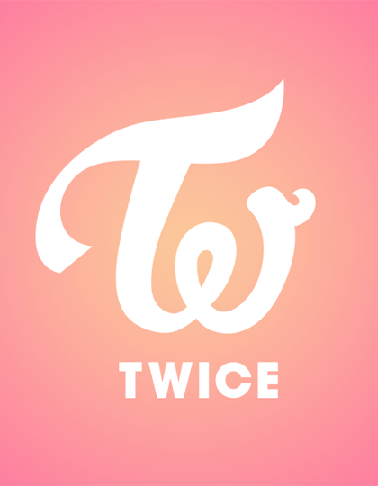
K-POPが好きです。特にTWICEが好きです。
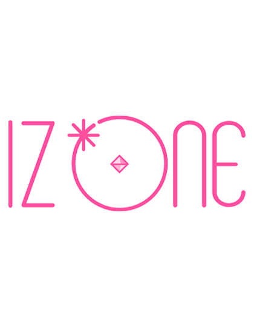
TIWCEの他に、I Z*ONEが好きです。
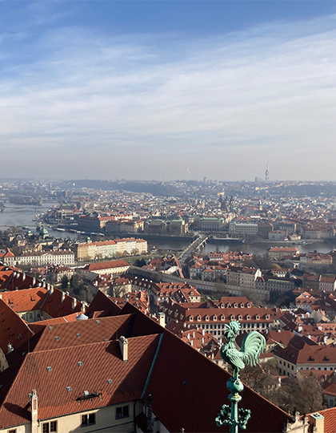
大学の卒業旅行でチェコに行きました。建物が本当にきれいでした。